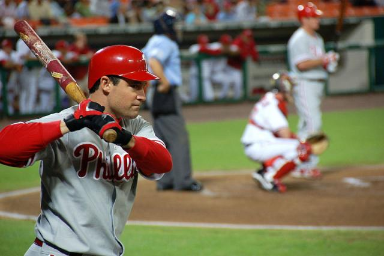

de 92 a 108, 2m de raio

37 m x 26 ou 27 de largura.


Tão antigos quanto o homem, os esportes são uma das invenções mais benéficas do homem. Além de manter o corpo saudável, ainda auxiliam na criação de um série de comportamentos positivos, como a humildade, a união, a empatia, dentre outros.
E os esportes com bola são, sem nenhuma dúvida, os mais populares. Mas você sabe a diferença entre alguns deles ? É justamente isso que iremos descobrir abaixo.
| Esportes | Origem | Ambiente | Objetivo | Equipe | ||
|---|---|---|---|---|---|---|
| 1 |  | Baseball | 1971, EUA | Campo com 1/4 de cículo, de 92 a 108, 2m de raio |
Realizar o maior número de corridas. | Nove jogadores em cada time. |
| 2 | |
Beach Soccer | 1930, Brasil | Quadra de areia com 35 ou 37 m x 26 ou 27 de largura. |
Realizar gols no campo adversário. | Cinco jogadores em cada time. |
| 3 | |
Biribol | 1968, Brasil | Piscina com 4 x 8 x 1,3m | Derrubar a bola na quadra adversária | 2 a 4 jogadores por time |
| 4 | |
Frescobol | 1946, Brasil | Ao ar livre | Manter a bola no ar pelo maior tempo possível. | Geralmente um contra um. |
Saiba mais acessando o aqui